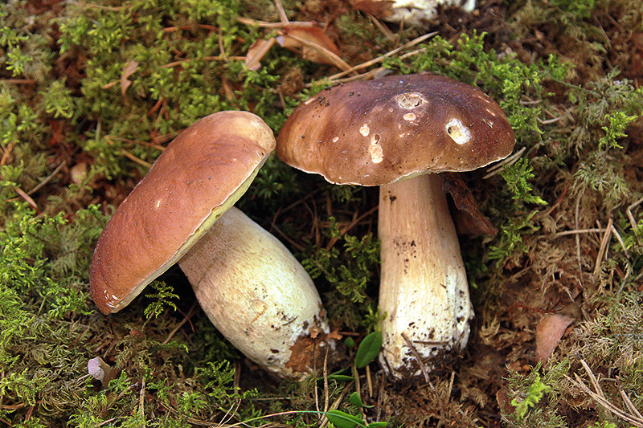

Baravika (Boletus edulis) jeb cietene ir beku dzimtas sēne, kuru lieto pārtikā, kā vērtīgu ēdamo sēni.
Baraviku augļķermeņi atrodami no jūnija vidus līdz oktobra vidum trijās četrās kārtās: reti un atsevišķi jūnija beigās, ražas kārta jūlija vidū, masveidā augusta otrajā pusē un septembra pirmajā pusē dažādos mežos, sausākās vietās. Mikorizu veido ar aptuveni 50 koku sugām, visbiežāk ar egli, priedi, bērzu, ozolu. Vasarā var atrast jaunajos mežos un stādījumos, silmalās. Rudenī dziļāk mežā, pie veciem kokiem, pie takām un pamestiem ceļiem. Bieži aug grupās vai saimēs (dažāda vecuma grupa) un atsevišķi.
| Enerģija | 30,11 kcal |
| Tauki | 0,23 g |
| Ogļhidrāti | 2,37 g |
| Proteīns | 3,15 g |
| Cukurs | 1,61 g |
| Piesātinātie tauki | 0,05 g |
| Sāls | 12,77 mg |